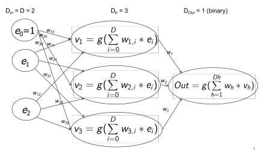

Neural networks
A neural network arranges many Perceptron in a hierarchical structure. Each node / layer pass a wighted signal to the next one(s). This method allow surpassing the linearity of the Perceptron . Then there is a system-wide trashold that is modeled as a matematical function. This function must be continuos and differetiable, superiorly and inferiorly limited in order to simplify the mathematics (sigmoid, arctangent, ...).
Feed-forward multi-layered checking
There are three layers: Input layer, hidden layer and output layer.
Input layer
it has a node for each dimension in the training set. It feed (with weight) the
Hidden layer
The number of nodes in this layer is a parameter of the network and, after the computation, they feed (with weights) the
Output layer
It has one node for each class or, in the case of 2 classes, one node only.
Example
 The function g() is the transfer function fo the node (like the sigmoid) An input is added to the network in order to deal with bias like in the case of Perceptron . The weights connect two nodes for each edge. A node can pass informations only to the following layer and all the nodes in a leyer are connected to all the nodes of the following one.
Pseudocode
def Neural_network()
w = [random() for d in D]
while not terminating_conditions:
for(x in training_instances):
nn_result = train(neural_network, x, w)
w = adjust_weights(w,nn_result)
propagate_back(w)
At the end, we will have a set of weights that are not easly understandable and that encodes the knowledge of the network on the training set. The convergence is not guaranteed. There are also a set of important issues to address:
- computing the wheight correction
- preparation of the train set to have 0 mean and unit variance
- set the terminating conditions
Compute the error
Let x be the input and y be the correct class of x. With w as the weights we can compute the error as linear least-squares problem :
The computation, then, looks a lot like the Gradient method or the Stochastic gradient descent (SGD) .
==>
revisited pseudocode
def Neural_network()
w = [random() for d in D]
while not terminating_conditions:
for(x in training_instances):
nn_result = train(neural_network, x, w)
error = error_compute(nn_result)
derivate = derivate(x,w)
w = adjust_weights(w,derivate) #both for hidden and output layers
propagate_back(w)
Learning models
We can use different learning models to update the weights of the network:
- Stocastic: it updates the weights right after the propagation. This can introduce some noise in the gradient computation but reduces the chance of getting stucked in a local minima
- Batch: It updates the weights after many propagations and it is generally faster since it moves in the direction of the avarage error computed on the propagations
Ripetitions
A learning over the whole samples of the network is called epoch. After each epoch the classification capability will be improved. Notes on Stochastic gradient descent (SGD) that uses a similiar structure.
Stopping criteria
We can have a set of stopping criteria that may change for each problem but, the most common one are:
- "Small" weight update in an epoch
- The error rate goes below a certain predefined target
- A timeout condition is reached (maximum cycle, maximum cpu usage, ...)